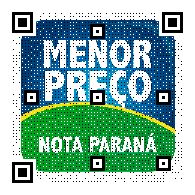
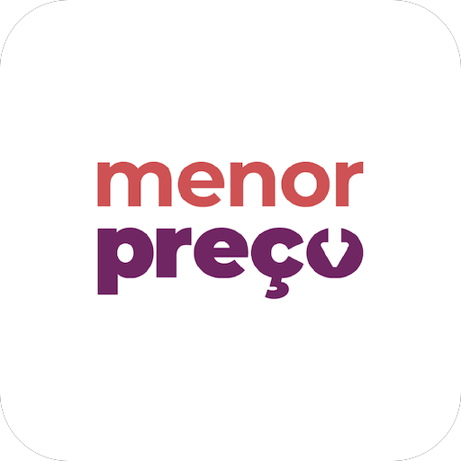
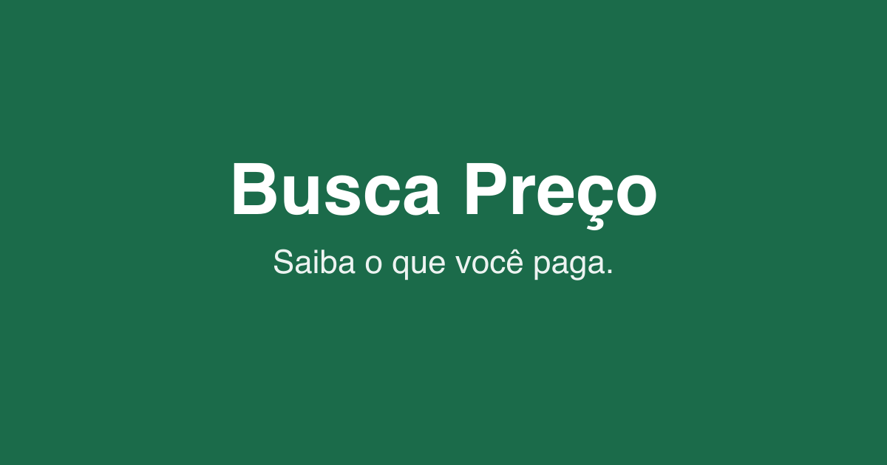
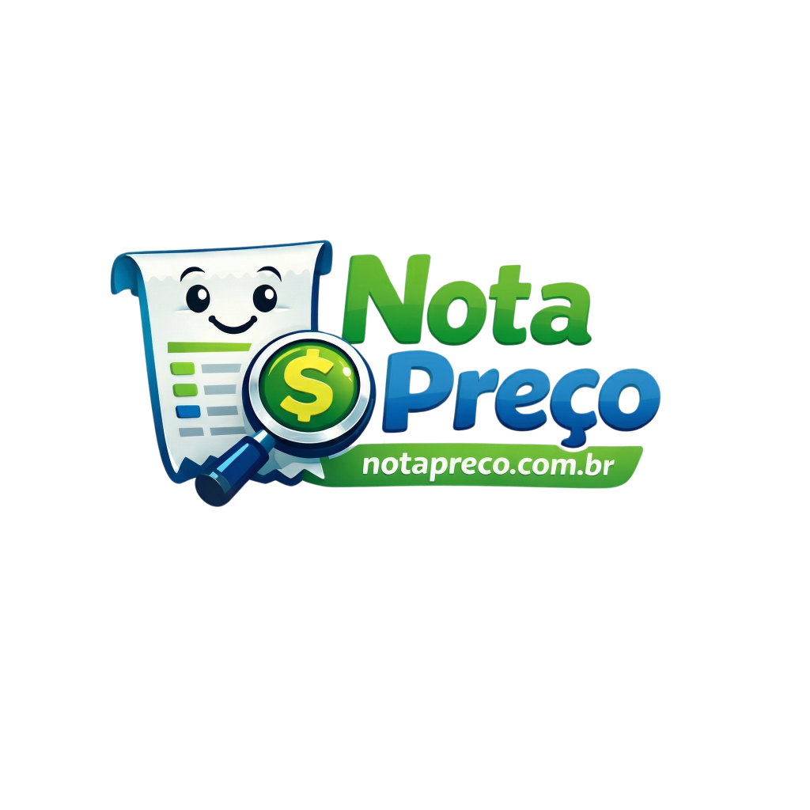
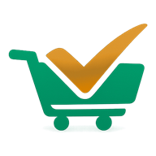
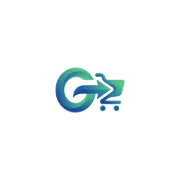

Insumo para a logo oficial do notinhas.shop: padrões, clichês e gaps visuais dos apps/portais que competem no eixo nota fiscal → preço de balcão. Não copiar marcas; extrair regras.
gov / SEFAZ Menor Preço (Nota Paraná) · Menor Preço Brasil
colaborativo NFC-e Busca Preço · Nota Preço · Mercado Certo · GoMarket · PoupApp · Qual o Preço
fora do eixo (não confundir) eNotas SaaS (emissão) · iFood/99/Rappi (delivery)

gov Azul + verde + amarelo · wordmark MAIÚSCULO · QR de marca. Ícone de app: selo institucional, não “fintech cute”.

Mesmo DNA azul/verde em tile de loja. Legível em 48–512 px.
Marca-mãe do programa. Verde institucional; “nota” como substantivo público (útil p/ notinhas).

colab Quase só wordmark branco em verde escuro + tagline. Sem símbolo forte — marca tipográfica.

colab Mascote recibo kawaii + lupa + $ · verde/azul gloss. Literalismo máximo (nota + preço).

colab Carrinho + check verde/laranja. Metáfora de compra certa, não de nota fiscal.

colab Monograma G + seta + carrinho; gradiente azul→verde. Linguagem marketplace/delivery.
Nomes descritivos + UI light. Pouca marca icônica pública; reforçam que o mercado ainda é tipográfico/utilitário.
| Marca | Tipo | Metáfora | Cores | Tom | Risco se notinhas copiar |
|---|---|---|---|---|---|
| Menor Preço / NP | Wordmark + QR | Dado fiscal / gov | Azul · verde · amarelo | Institucional | Parecer órgão público |
| Busca Preço | Wordmark | Nenhuma | Verde escuro · branco | Direto | Genérico; fraco em ícone |
| Nota Preço | Mascote + wordmark | Recibo + lupa + $ | Verde · azul · gloss | Playful | Infantil / datado |
| Mercado Certo | Símbolo | Carrinho + check | Verde · laranja | Retail | Confusão com lista/mercado |
| GoMarket | Monograma | G + carrinho | Azul→verde | Tech marketplace | Parecer delivery |
| notinhas.shop (alvo) | Wordmark + símbolo | Recibo + QR + seta ↓ preço | #014380 · #0069B4 · #00984B | Claro · utilitário | — |
Fazer
notinhas azul profundo + .shop verde (Plus Jakarta ExtraBold)Não fazer
e-notas/marca/referencias-identidade/ (`20`–`23`, `41`–`45`)identidade-visual-notinhas-v1.html § logo · notinhas.shop.DESIGN.mdUso interno notinhas.shop / e-notas · fair use para análise de marca · não redistribuir assets de terceiros como kit oficial.